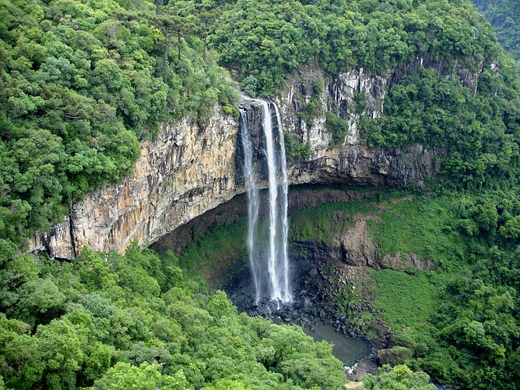
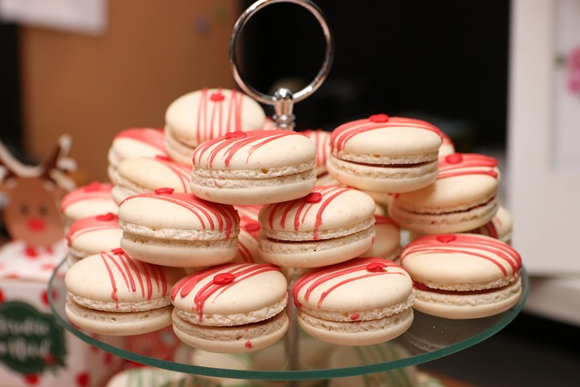
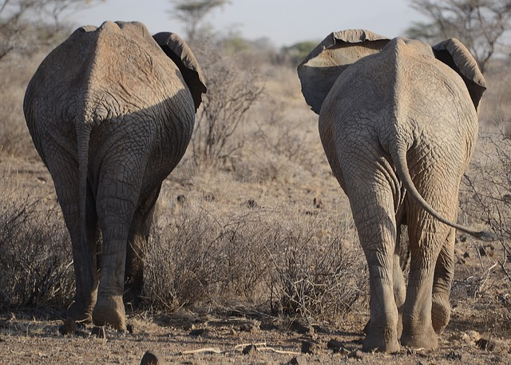

Roteiros de Viagem
Descubra os melhores roteiros para explorar o mundo
Roteiros recomendados


Itália Clássica
Visite Roma, Florença e Veneza em um roteiro de 10 dias cheio de história e arte.
Saiba Mais

Japão Moderno e Tradicional
Descubra Tóquio, Quioto e Osaka em um roteiro de 7 dias inesquecíveis.
Saiba Mais



Maravilhas do Brasil
Explore o Rio de Janeiro, Foz do Iguaçu e a Amazônia em uma aventura única.
Saiba MaisDestaques
Destaques Gastronômicos
Experimente as melhores culinárias do mundo em 10 dias imperdíveis.


Aventura na África
Safáris emocionantes e paisagens incríveis em um roteiro de 12 dias.

Descubra a Europa
Visite os principais destinos da Europa em um roteiro de 15 dias.